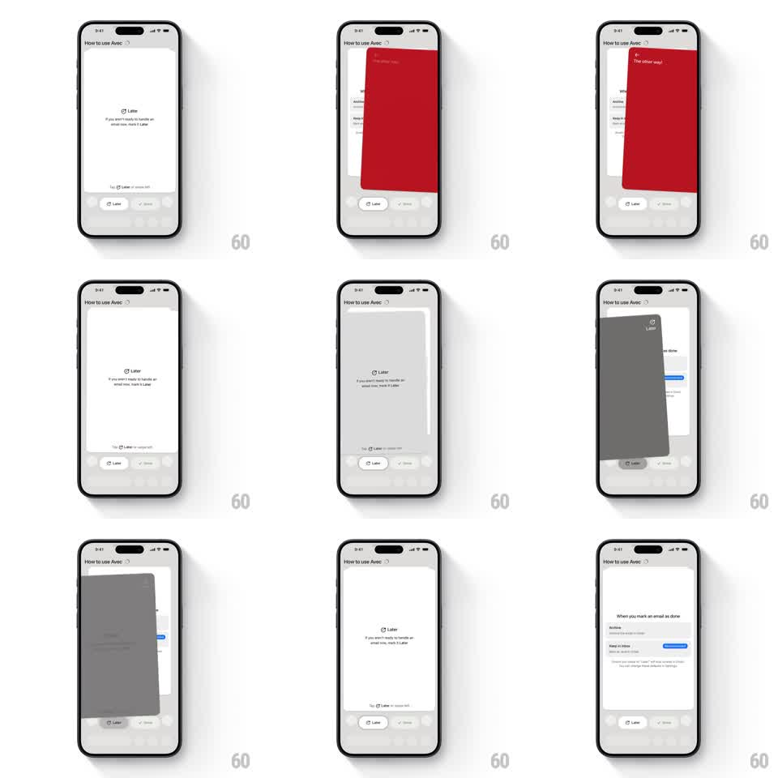

Media
Frame-by-frame

Rebuild this interaction 1:1: Avec's swipe tutorial - an onboarding email card teaches left/right actions; a wrong-direction swipe pulls a red "The other way!" warning card over the screen, and a correct swipe flicks the card away with rotation.

Rebuild this interaction 1:1: Avec's swipe tutorial - an onboarding email card teaches left/right actions; a wrong-direction swipe pulls a red "The other way!" warning card over the screen, and a correct swipe flicks the card away with rotation.
## Integration
Integration: stack-agnostic spec - springs given as stiffness/damping, timed motions as duration + curve; map every value to your framework and animation library of choice.
## Scene
"How to use Avec" sheet: an email card center ("Later - If you aren't ready to handle an email now, mark it Later") with a hint line and two action pills (Later, Done) below, over a faint inbox backdrop. Later steps reveal a detail card ("When you mark an email as done" with Archive / Keep in inbox options).
## Motion spec
Pattern: tutorial card swipe with a wrong-way warning overlay.
- Drag moves the card 1:1 with slight rotateZ (up to +/- 8 degrees).
- Swiping the wrong way: a full red card slides in from the drag side ("The other way!" with a redirect arrow, spring ~300/16), holds 900ms, then slides back out - the email card never leaves.
- Swiping the right way: the card flicks off with spin (rotate to +/- 20 degrees as it exits, 300ms, velocity-inherited) and the next card slides up from behind (scale 0.95 -> 1, translate 16px -> 0, 250ms).
- Action pills highlight on approach (fill tween, 150ms) as the card crosses their threshold.
## Calibration
- The warning is cheeky, not punishing: fast in, patient hold, clean exit.
- The card's rotation pivot sits at the bottom corner opposite the swipe.
## Reduced motion
Warning fades in/out (200ms); cards slide without spin.
## Don't miss
- The red card covers the stage fully - it is a card, not a toast.
- After the final card, the sheet settles on the detail view with a gentle fade-up.